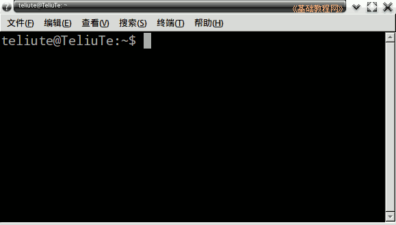
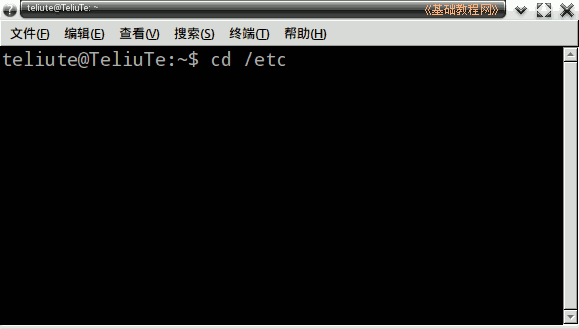
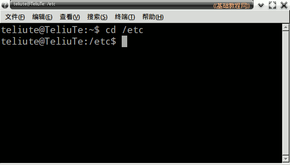
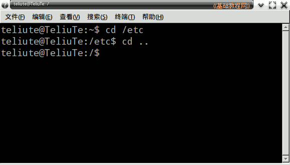
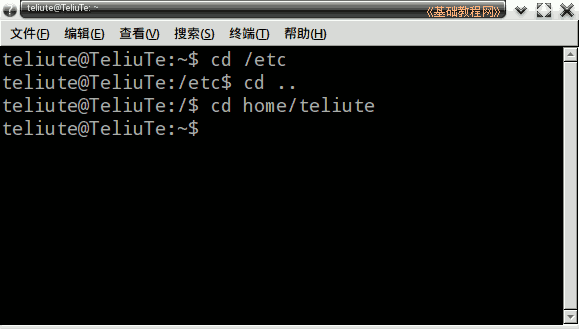

Ubuntu 命令行教程
作者：TeliuTe 来源：基础教程网
四、cd 切换目录 返回目录 下一课从一个文件夹转到另一个文件夹，我们使用 cd 命令；
1、cd 命令
1）打开终端窗口，显示当前为主文件夹；

2）输入命令 cd /etc ，注意在cd 后面有一个空格，etc 是一个存放系统配置文件的文件夹；

3）按回车键后，当前路径改变为 /etc，也就是来到了 etc 文件夹中；

4）输入 cd .. 命令，注意 cd 后面有个空格，然后是两个点，
它代表上一级文件夹，也就是根目录，一个点代表当前文件夹；

5）输入 cd home/teliute 注意cd 后面有一个空格，由于 home文件夹在根里面，前面就不必加 / 了，后面的 teliute 换成自己的用户名；

6）这样又回到自己的主文件夹，也可以输入命令 cd ~ 直接回到主文件夹；
本节学习了 cd 转换文件夹命令的基础知识，如果你成功地完成了练习，请继续学习下一课内容；
本教程由86团学校TeliuTe制作|著作权所有
基础教程网：http://teliute.org/
美丽的校园……
转载和引用本站内容，请保留版权信息和本站链接。